Fumigation Dosage Plan Tab
When you click on the "Next Step" Button on the Fumigation Dosage Plan tab, you will see a screen like the one below. The Fumigation Dosage Plan tab is where all information and variables pertaining to calculation of a fumigant dose and dosage are entered.

Note: The width of any ProFume Fumiguide column can be adjusted by placing the on-screen cursor on the gray line between the column titles and increasing/decreasing widths. Also notice that gray areas on any tab are where calculation results are displayed. Any field that has a white background is where inputs or selections from lists can be made.
Any field preceded by an "*" requires an entry. The following fields require an entry for a calculation of dosage. Their respective definitions are listed after these terms.
*Target Pests: the insect or group of insects selected for control during the fumigation. More than one insect may be selected by clicking on those pests from the menu. If the pest you desire to control is not listed by name, select either "Other Beetle" or "Other Moth" from the menu. Any pest can be de-selected by clicking on it again.
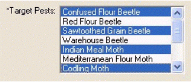
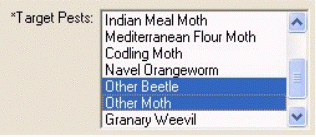
*Dosage: Two options are available in the ProFume Fumiguide for level of control: "Low" and "High".
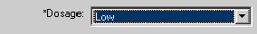
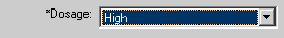
The "Low" option provides control of larvae, pupae, adults and some eggs. This base level of control is suited for maintenance fumigations.
The "High" option provides control of eggs, larvae, pupae and adults. This high level of control is suited for heavy-duty clean out fumigations.
After calculating "Low" or "High" dosage, the fumigator can recommend a custom dosage above "Low" and 1500 CT that will meet customer expectations. This can be accomplished by entering the desired dosage in the "User defined CT" column.
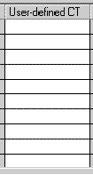
Please note that “User defined CT” value should not be less than 36 CT or exceed 1500 CT
Precision Fumigation can be defined as optimizing fumigant use to maximize efficiency and minimize risk. Precision Fumigation is achieved by integrating all the factors affecting control, such as pest biology, temperature, exposure time, and improved sealing techniques into the fumigation management plan.
Commodity is the food inside the fumigated space. Several commodity choices are available in the list, however, you may only select one commodity from the list.
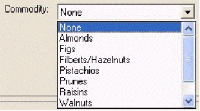
*Fumigation Type: There are two fumigation types: Commodity or Space.
Select "Space" are primarily targeting pests infesting structures, equipment, commodities, etc. (e.g. mills, food processing facilities, warehouses,grain bins,silos). BR>
Select "Commodity" when targeting pests infesting the commodity or finished product that requires higher degree of control
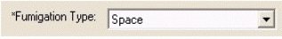
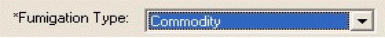
Load Factor is an estimated percentage of the fumigated space filled by commodity. You may enter any whole number between 1-100.
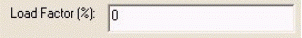
*Pressure Type: Two fumigation pressure options are available in the ProFume Fumiguide-Normal Atmospheric or Vacuum.
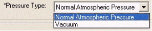
Area Name is a section within a structure or building or the whole building. This could be a floor, a room or section of the structure. Each Area can have a separate temperature, estimated HLT, and volume. Several Areas can be entered and individual dosages will be listed for each of those listed areas.
Structure: A freestanding building, storage facility, chamber, etc.
Dosage: Refers to the number of oz-h/MCF or g-h/m3 accumulated during the exposure period. Dosage is interchangeable with CT. Types of dosage include: Target Dosage, Projected and Achieved Dosage.
Dose: The concentration/volume (ounces/MCF or g/ m3) amount of fumigant introduced into the fumigation space — oz/MCF (see Initial Target Concentration).
*Temperature: The degree (F or C) at the site of pest activity either in the structure, machinery, or commodity. In the case of chamber fumigations, the internal temperature of the commodities to be fumigated should be used for Fumiguide calculations. You may enter any temperature between 40°F and 150°F
*Estimated Half-Loss Time (HLT): Time required to lose one-half of the fumigant concentration, measured in hours. The estimated HLT must be between 1.00 and 1000.00 hours.
*Exposure Time: The amount of time (exposure period) a fumigant is confined in a structure to kill the target pest. The planned exposure time must be between 1.00 and 168.00 hours. While monitoring fumigant concentrations, the exposure time should be the same on the Fumigation Dosage Plan, Monitoring Data Input and Monitoring Status tabs. Exposure time can vary across Areas when evaluating fumigation scenarios, but must be the same when monitoring a job. If Areas of different exposure times are desired, open a second version of the Fumiguide and initiate a new job. Multiple Fumiguide programs can be open at once.
*Area Volume: The measurement of the interior space expressed in English units of cubic feet and metric units of cubic meters. The area volume must be between 35 and 10,000,000 cubic feet.
Notice in the example below that the structure has 2 areas (Mill and QA Building) all with the same Exposure Period, but each having individual temperature, volumes and estimated HLTs combinations.
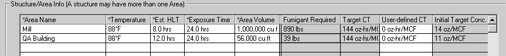
After the all required fields are entered correctly, click the "Calculate" button to see the dose and dosages by area in the "Results" box.
Calculate Dosage: When data input (white background) for a row in Structure/Area Info table are entered, select "Calculate" button to calculate Fumigant Required, Target CT and Initial Target Concentration. Results for the entire structure will appear in the Results box.
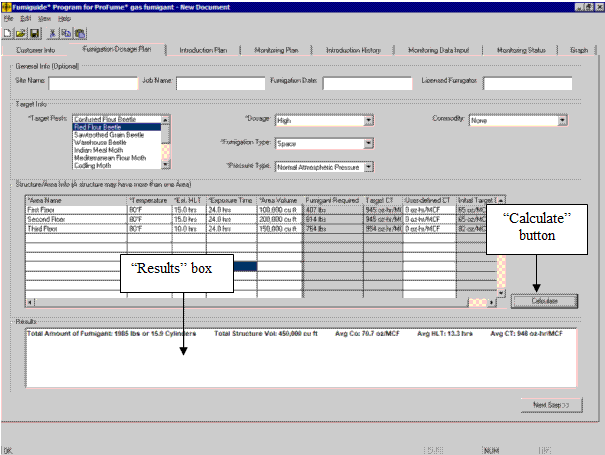
User Defined CT: After calculating “Low” or “High” dosage, the fumigator can recommend a custom dosage that is above “Low " and 1500 CT that will meet customer expectations. This can be accomplished by entering the desired dosage in the “User defined CT” column and select “calculate” button.
Please note that “User defined CT” value should not be less than the “Low” dosage for the selected pest or exceed 1500 CT.
Warning Messages within the Fumigation Dosage Plan Tab
If you enter a number or value outside the acceptable ranges referenced earlier, you will see a warning message box like the following:
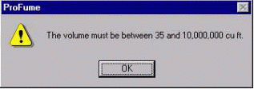
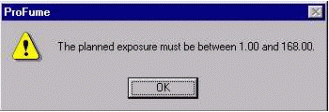
Other general warnings from the Fumigation Dosage Plan tab:
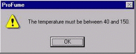
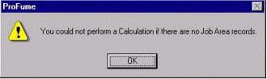
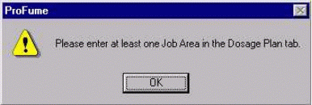
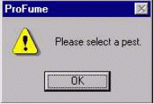
If you enter a number that is within acceptable ranges, but control will be less than optimal, you will see warning messages displayed in red in the Results box. The Area dosage line in the Structure/Area Info will be highlighted in red also.
Warning message when the temperature is below calculation range.
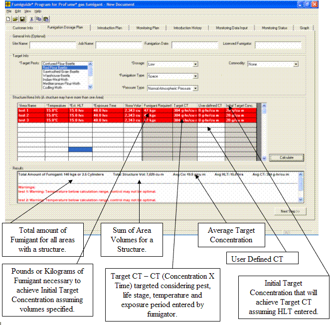